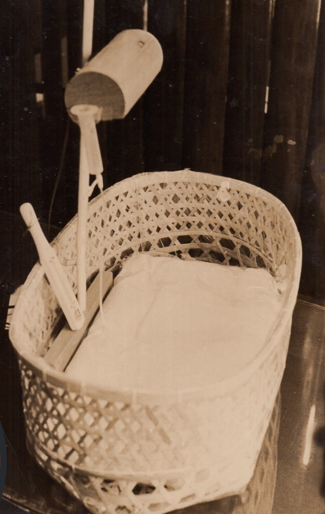
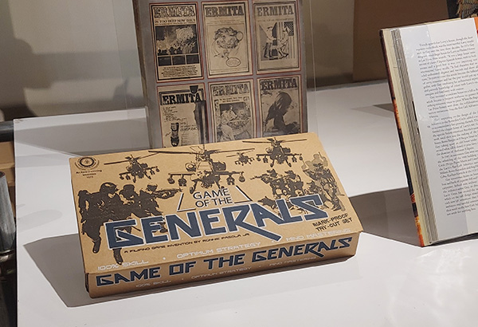
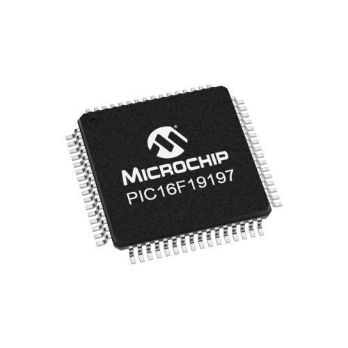

Image Source: Philippine Science Heritage Center
Bamboo Incubator
The bamboo incubator, invented by Dr. Fe Del Mundo in 1880, is a less expensive and accessible solution aimed at providing a nurturing environment for premature babies, particularly in rural areas with limited resources. This bamboo incubator is made from wicker laundry baskets lined with sterilized cloth and usess hot water bottles for warmth. Dr. Del Mundo further improved the design by adding a hood supplied oxygen to regulate the infant's environment.
Trivia: The creation of the incubator sparked widespread enthusiasm among both the public and professionals, driven by the potential to significantly lower premature infant mortality rates.
Image Source: Philnews Ph
Erythromycin
Erythromycin is a powerful antibiotic discovered by Dr. Abelardo Aguilar in 1949. It was developed from soil samples collected in his backyard. Erythromycin is effective in treating a variety of bacterial infections, including diphtheria, urinary tract infections, and sexually transmitted diseases.
Trivia: The pharmaceutical company Eli Lilly, where Dr. Aguilar previously worked, marketed it under the brand name "Ilosone," named after Aguilar's hometown, Iloilo, however, failed to acknowledge his crucial role in its development.

Image Source: Philstar
Game of the Generals
Game of the Generals, also known as "GG," "GOG," or "The Generals," was derived from the educational war game, “Salpakan,” invented by Sofronio “Ronnie” H. Pasola Jr. in 1970 and produced by MindMasters Inc. in 1972. This strategic board game tests military-like skills through cumulative moves and was part of the 20th-century trend that led to the appreciation of video games.
Trivia: Despite a decline in popularity with the rise of digital games, it still enjoys by dedicated enthusiasts, who continue to play the game, organize clubs, and hold tournaments similar to those in chess.

Image Source: IndiaMart
Single Chip GUI Accelerator
The Single Chip GUI Accelerator is a 16-bit microprocessor-based calculator invented by Diosdado Banatao in 1970s. It is a innovative technology that condenses complex graphical processes into a single chip, refining the user interface and enhancing the overall efficiency of computers. This chip improved computer operations by simplifying and speeding up graphic rendering.
Trivia: The Single Chip GUI Accelerator is still utilized in modern PCs today.